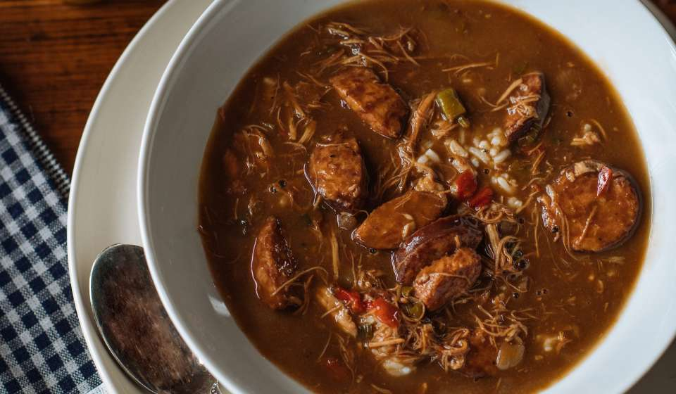

Gumbo
Adapted from Isacc Toups' recipe on NewOrleans.com

Description
Gumbo is one of my favorite weekend meals. You can spend a whole day making it, just waiting around the pot and
making your house smell great.
Ingredients
- 4 bone-in, skin-on chicken thighs
- 3 teaspoons of kosher salt
- 2 teaspoons of black pepper
- 1/2 cup of cooking oil
- 1/2 cup of flour
- 1 large onion, diced
- 1 large bell pepper, diced
- 2 ribs of celery, diced
- 10 cloves of garlic, crushed
- 4 bay leaves
- 1 bottle or can of amber-style beer
- 5 cups of chicken stock
- 1/2 teaspoon of cayenne pepper
- 1 lb of andouille sausage, cut into bite-size pieces
To serve:
Steps
- Preheat the oven to 400°F. Season the chicken thighs with 2 teaspoons of the salt and 1 teaspoon of the
black pepper. Place on a rimmed baking sheet, skin side up, and roast for 20 minutes, or until the skin is
lightly browned. Remove from the oven and set aside. Don't Throw that fat away, it’s going in the gumbo
later.
- In a heavy Dutch oven over medium heat, make a dark roux, using the oil and flour, about 45minutes. Once the
roux is the color of milk chocolate, add the trinity of onion, bell pepper, and celery, and stir once every
5 seconds for about a minute until the vegetables begin to soften and caramelize. The roux is rocking hot,
so these vegetables are going to cook really quickly. Don’t walk away! After a minute, add the garlic and
bay leaves and cook for another 30 seconds, stirring frequently.
- Deglaze the pot with the beer, scraping the bottom with a wooden spoon until all the browned bits are
released. Stir constantly until it returns to a simmer.
- Add the stock and continue stirring until it returns to a simmer. Add the remaining 1 teaspoon salt and 1
teaspoon black pepper and the cayenne. Add the reserved chicken thighs (skin, bones, everything) and their
fat and the sausage. Bring back to a bare simmer, being careful not to let it boil and not to let the roux
scorch, reduce the heat to the lowest setting on your stove, and cover. Simmer for 3 hours, stirring every
30 minutes, scraping the bottom each time. Your gumbo should begin to thicken, but not like gravy. If it
starts getting too thick before the 3 hours are up and you have to hit it with a little water to thin it, do
so.
- Serve with rice. I put the gumbo down in each bowl first and then put the rice on top. Garnish with sliced
green onions. If you want to bump up the heat, add a little bit of hot sauce.